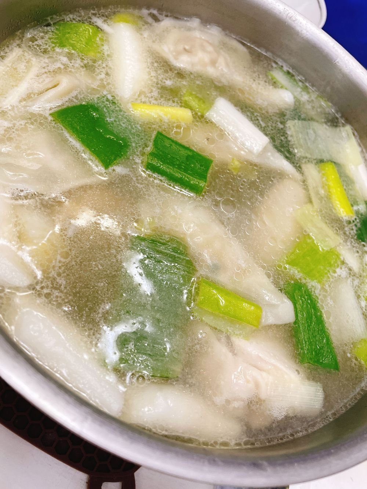

ㅎㅎㅎㅎㅎ
네가 진짜 좋아하는 닭한마리 🐓
근데 난 닭한마리 에 있는 감자 랑 국수 가 진짜 진짜 좋아해
채연이 랑 매니저언니 랑 먹었지렁
역시 혼자 보다 다같이 먹는 밥 맛있어 ㅎㅎ
닭한마리 에는 후주 넣으면 진짜 맛있어 RG🥺
私が本当に大好きなタッカンマリ食べた🐓
でも、タッカンマリの中のじゃがいもと、締めの麺が本当に大好き、それを食べるために食べてる🌸
チェヨンとマネージャーオンニと食べたよん
やっぱり一人よりみんなで食べた方が美味しい🥺
タッカンマリ食べるときは、胡椒入れたらめちゃくちゃめちゃくちゃ美味しいよ！